Recursos humanos cuida a las personas de la empresa: marca quién entra y quién sale, arma los grupos de turno, agrega al personal, importa las marcas del lector de huellas, revisa la asistencia y paga la nómina.
Recursos humanos no cambia las reglas de pago ni los bonos: eso es de Gerencia. Sí puede cambiar los horarios de los turnos.
Mi día en 5 pasos
Entra al sistema y elige Recursos humanos.
En En planta hoy, marca la entrada de cada persona (o de todo el grupo).
Al final del turno, marca la salida.
Mira Asistencia y Bonos para ver que todo cuadre.
En fechas de pago, entra en Pagar nómina.
Cómo entro y elijo mi puesto
Abre el sistema.
Pulsa el botón Recursos humanos.
Se abre En planta hoy.
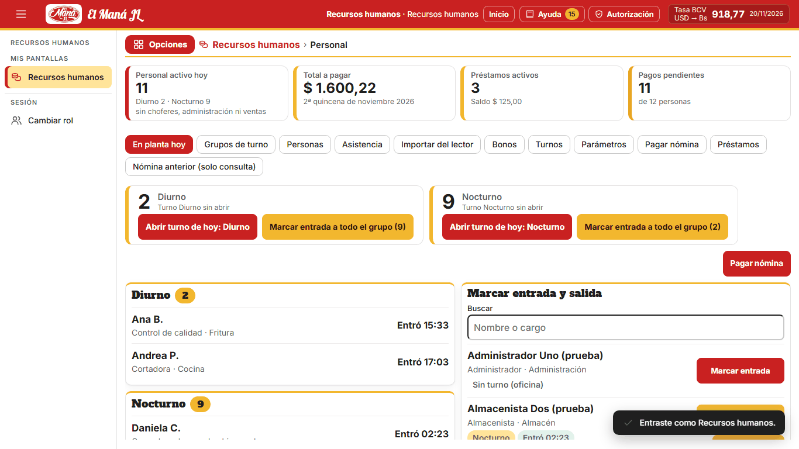
Pantalla de inicio de Recursos humanos
Cómo marco la entrada y la salida
Entra en En planta hoy.
En Marcar entrada y salida, busca a la persona.
Pulsa Marcar entrada cuando llega.
Pulsa Marcar salida cuando se va.
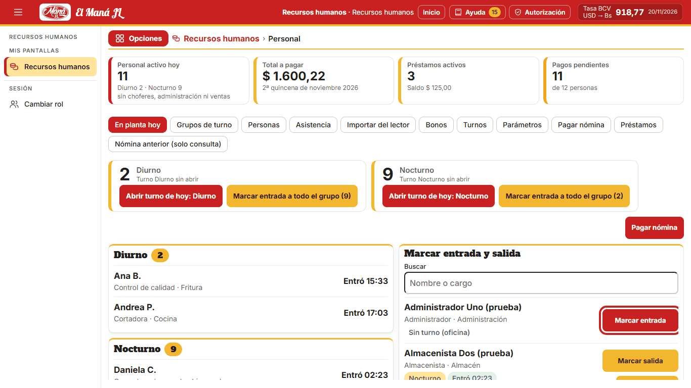
Marcar entrada y salida de una persona
Si el botón está apagado y dice «Falta el turno en Personal», mira «Si algo sale mal».
Para marcar a todo el grupo de una vez
En el turno (Diurno o Nocturno) pulsa Marcar entrada a todo el grupo.
Si alguien faltó, pulsa Quitar entrada en su fila.
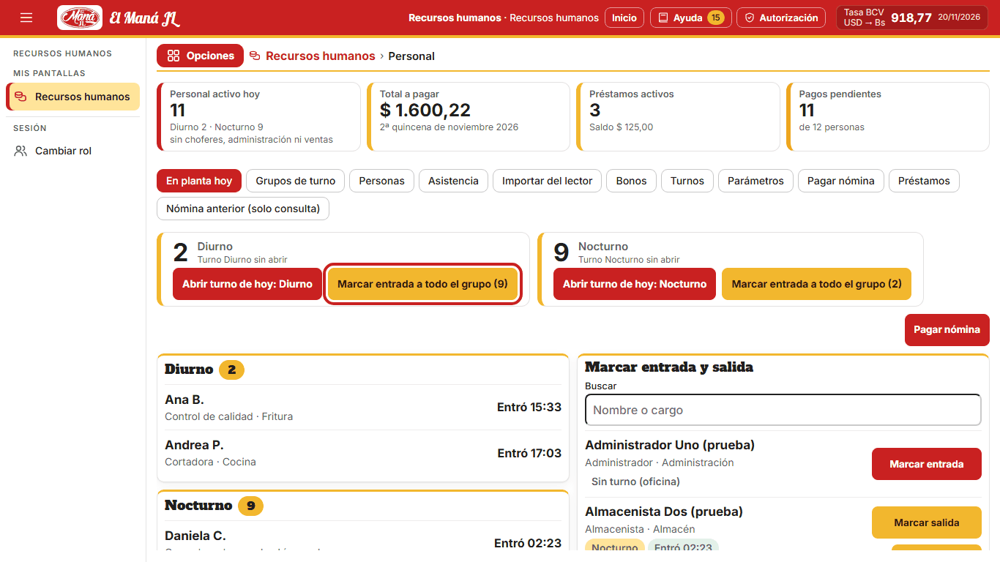
Marcar entrada a todo el grupo
Cómo armo los grupos de turno
Entra en Grupos de turno.
Elige quién integra el Grupo 1.
Elige quién integra el Grupo 2.
Elige qué turno tiene cada grupo esta semana (Diurno o Nocturno).
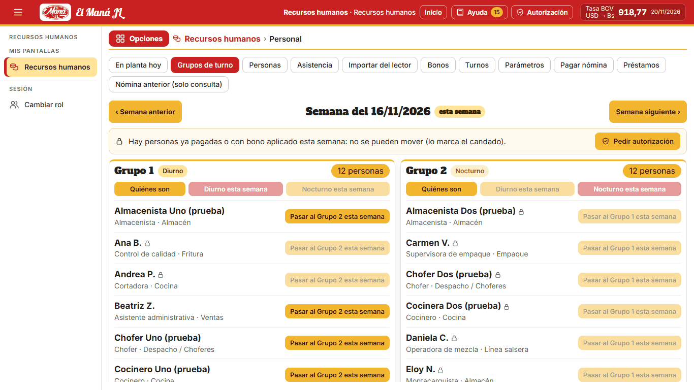
Grupos de turno
Los turnos y los grupos son solo de planta (Producción y Logística). No incluyen a Administración, Ventas ni choferes. Producción solo puede iniciar si el grupo del turno tiene personal con entrada marcada.
Cómo agrego a una persona
Entra en Personas.
En la tarjeta Agregar persona, escribe nombre y apellido.
Escribe la cédula.
Escribe el cargo.
Elige el puesto (Gerencia, Administración, Ventas, Recursos humanos, Producción o Logística) y su área.
Escribe la fecha de ingreso y el teléfono.
En Se le paga por, elige Día u Hora, y escribe la tarifa en $.
Si es de planta, elige el Turno de trabajo (Diurno o Nocturno).
Pulsa Agregar persona.
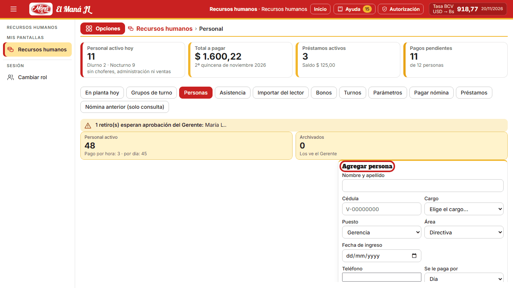
Agregar persona
Sin turno no se puede marcar la entrada. Si la persona maneja un vehículo, activa Es chofer. Si al abrir En planta hoy o Personas aparece Revisa estas personas, indica si son de Ventas o su área de Producción.
Cómo cambio los horarios de los turnos
Entra en Parámetros.
En Horario por turno, elige cuándo entran y salen el Diurno y el Nocturno.
Elige desde qué día vale el cambio.
Guarda el cambio.
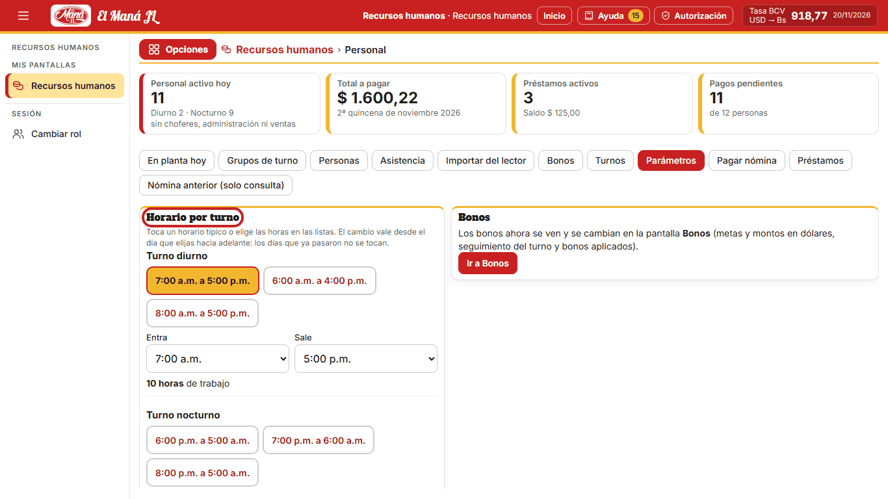
Horario por turno
Los días que ya pasaron no cambian. No se puede empezar en días ya pagados o con bono aplicado. Cada cambio queda en Auditoría y le llega un aviso a Gerencia. Las reglas de pago y el bono los cambia solo Gerencia.
Cómo importo las marcas del lector de huellas
Entra en Importar del lector.
Sube el archivo del lector (Hikvision).
Revisa lo que el sistema entendió.
Asocia los códigos nuevos a su persona.
Resuelve lo dudoso.
Guarda.
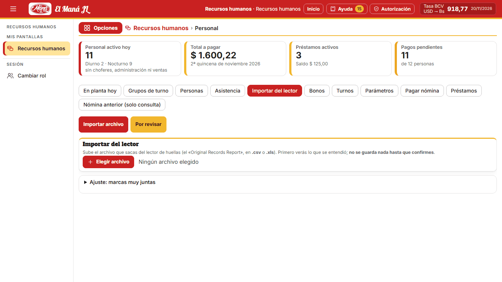
Importar del lector
La asistencia se llena sola con esas marcas.
Cómo reviso la asistencia
Entra en Asistencia.
Cambia de quincena con Anterior, Siguiente y Esta quincena.
Mira quién vino y quién faltó.
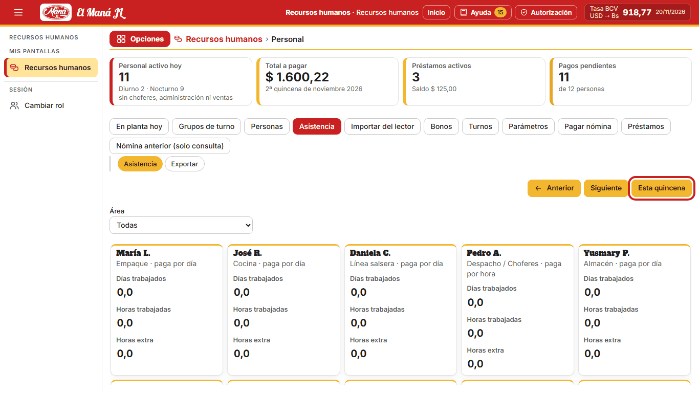
Asistencia de la quincena
Cómo veo los bonos y los turnos
Entra en Bonos.
En Turno en vivo, mira cuánto llevan y si califican.
Entra en Turnos.
Elige el día y el turno (Diurno o Nocturno).
Mira Quiénes estuvieron.
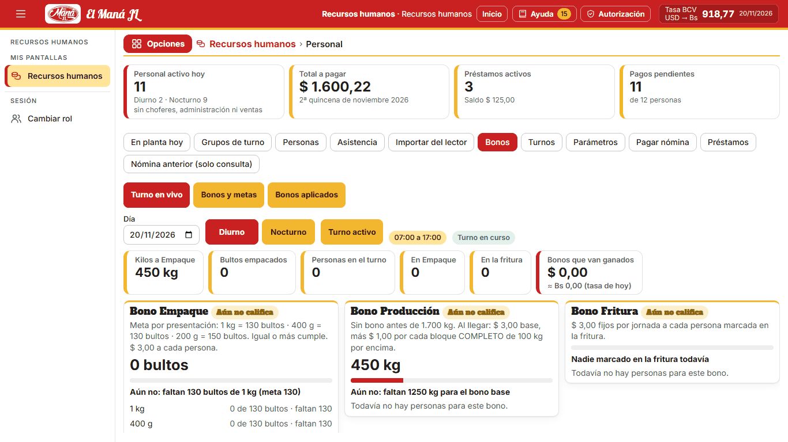
Turno en vivo y bonos
Los bonos se aplican solos al cerrar el turno de Producción. Si algo no cuadra, avisa a Gerencia o a Administración (ellos pueden pulsar Deshacer).
Cómo pago la nómina
Entra en Pagar nómina.
Elige Semana, Quincena o Mes.
Muévete con Anterior, Siguiente y Hoy.
Revisa la tabla: lo trabajado, horas extra, bonos, préstamo y total a pagar.
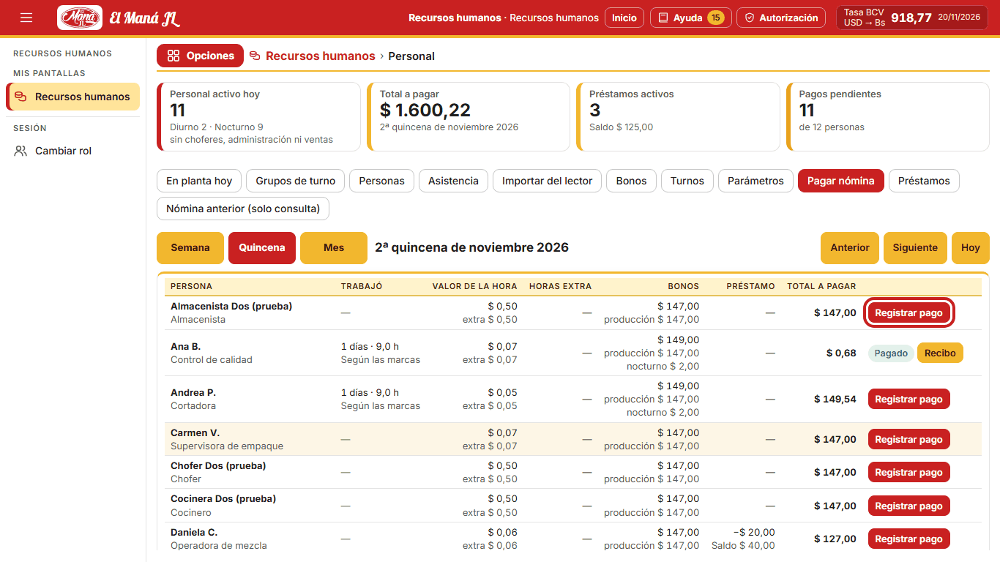
Tabla de pagar nómina
En la fila de la persona, pulsa Registrar pago.
Revisa base, extra, bonos y deducciones de ley.
Si tiene préstamo, marca Descontar la cuota del préstamo y escribe el Monto a descontar ($).
Elige la fecha y la forma de pago (Efectivo, Transferencia o Pago móvil).
Pulsa Confirmar pago.
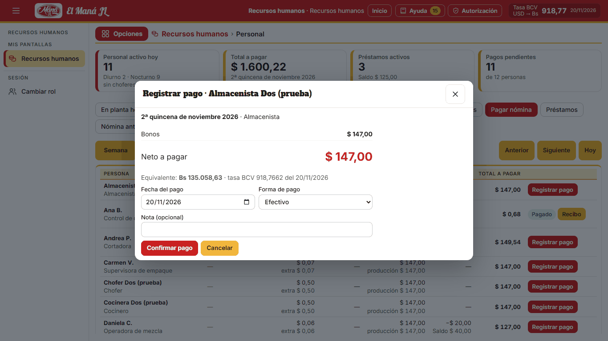
Registrar el pago de una persona
Cuando la fila diga Pagado, pulsa Recibo para imprimirlo o guardarlo en PDF.
La nómina se calcula en dólares. Al pagar, el sistema muestra los bolívares a la tasa BCV del día de pago.
Si algo sale mal
El botón «Marcar entrada» está apagado
Mira el aviso en la fila: «Falta el turno en Personal».
Entra en Personas.
Abre a esa persona y elige su Turno de trabajo.
Vuelve a En planta hoy y marca la entrada.
Marqué la entrada a alguien que faltó
En En planta hoy, busca a la persona.
Pulsa Quitar entrada.
Producción no puede iniciar el turno
Revisa en Grupos de turno que el grupo del turno tenga personal.
Revisa en En planta hoy que esa gente tenga la entrada marcada.